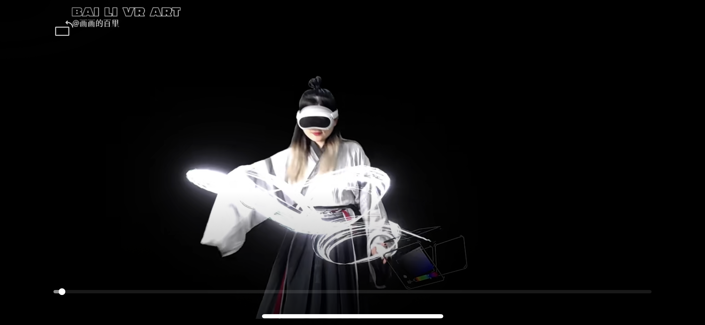
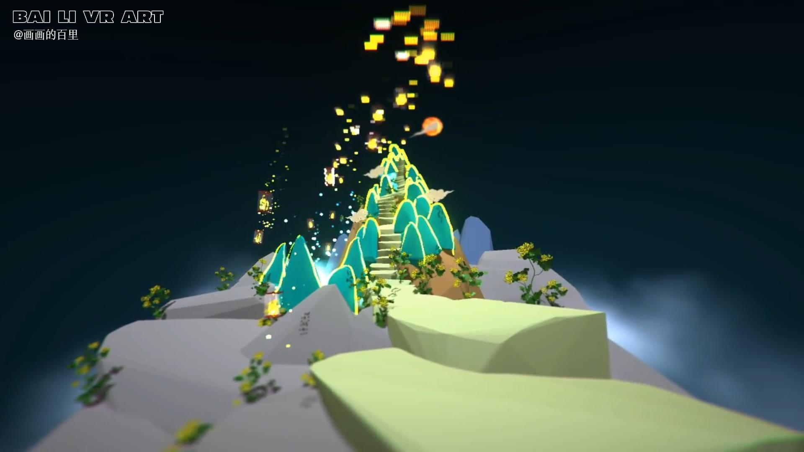
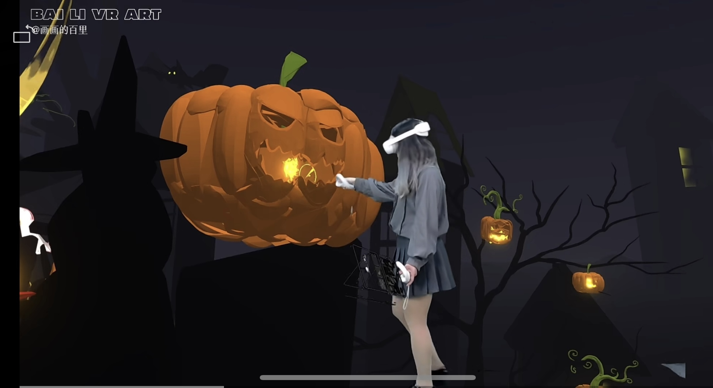
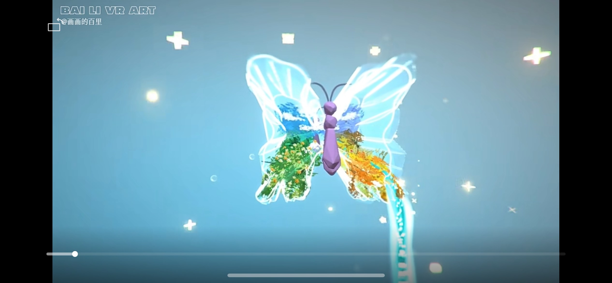
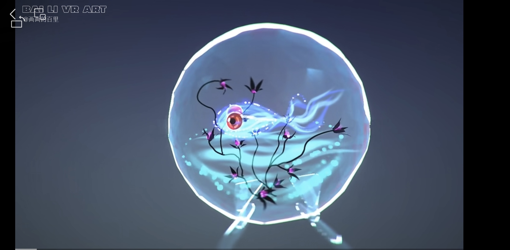

VR PAINTING / WEI JIN
魏晋风骨
以魏晋士人的风骨、山水和云气为线索，在空间中展开人物与意境。笔触不再停留在纸面，而是在观看者周围形成可进入的气场。
VR PAINTING / SPATIAL BRUSH
VR 绘画把身体变成画笔，把线条、光、山水、人物和节日意象放进三维空间。观看者不只是看见画面，也像走进一座正在生成的场景。

IMMERSIVE DRAWING
这些作品延续百里对传统文化、节日气氛和个人记忆的兴趣。不同于平面插画，VR 绘画更像一场在空间里完成的表演：每一笔都有方向、距离、速度和身体的痕迹。
返回绘画作品
VR PAINTING / WEI JIN
以魏晋士人的风骨、山水和云气为线索，在空间中展开人物与意境。笔触不再停留在纸面，而是在观看者周围形成可进入的气场。

VR PAINTING / HALLOWEEN
用南瓜、夜色、节日灯光和怪诞童趣搭建一个轻盈的幻想场景。作品保留节日的幽默感，也让空间绘画拥有舞台般的戏剧性。

VR PAINTING / CHILDHOOD
从童年记忆和内在柔软处出发，搭建一座可以被环绕观看的心灵山谷。线条像路径，也像情绪的回声。

VR PAINTING / MOON ISLAND
月色、水岸、洲渚和灯火在空间中层层铺开，像一首可以行走的诗。作品试图把东方意境变成沉浸式的视觉经验。